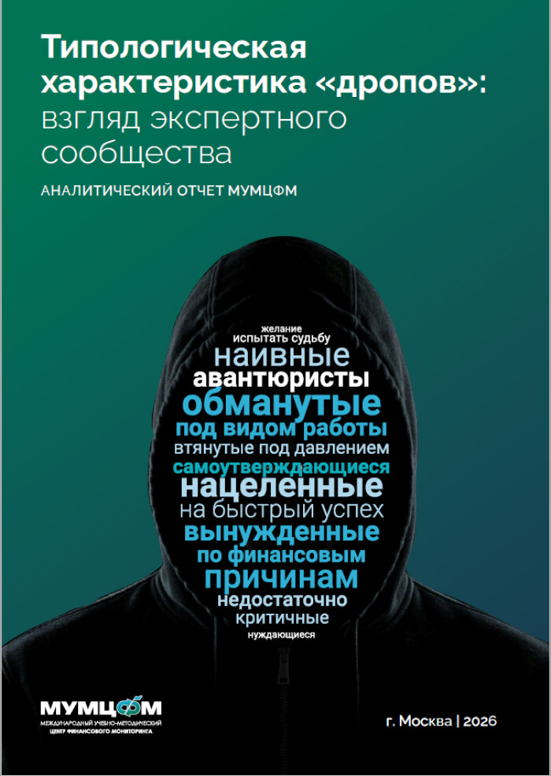
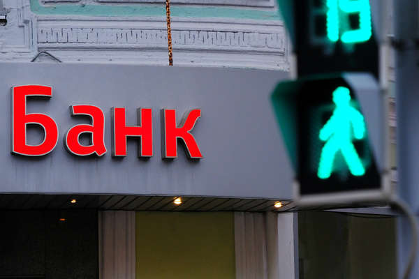

В последние годы мошенничество в России все чаще переходит в цифровую среду. Современные преступники используют методы социальной инженерии, вредоносные программы, фишинговые сайты и поддельные аккаунты для получения доступа к персональным данным граждан. Получив контроль над учетными записями, злоумышленники могут похищать денежные средства, оформлять кредиты и совершать другие противоправные действия.
1. Взлом аккаунта через код из СМС
Одной из наиболее распространенных схем является получение мошенниками одноразового кода подтверждения из СМС. Злоумышленники звонят гражданам, представляясь маркетплейсами, сотрудниками правоохранительных органов, операторов связи, служб доставки или государственных организаций.
Последствия взлома аккаунта («Госуслуги» и др.):
- Оформление кредитов и микрозаймов на имя жертвы;
- Изменение персональных данных;
- Получение доступа к банковским сервисам и хищение средств;
- Использование данных для дальнейших мошеннических действий;
- Попытки совершения сделок с недвижимостью с использованием похищенных документов.
Важно помнить: сотрудники банков, государственных органов и правоохранительных структур никогда не запрашивают коды подтверждения из СМС по телефону.
2. Фишинговые ссылки и ПО
Мошенники активно используют методы социальной инженерии, рассылая сообщения с интригующими заголовками, такими как:
- «Посмотри это фото»;
- «Это ты на видео?»;
- «Вам пришла посылка» или «Подтвердите доставку»;
- «Получите выплату» или «Вы выиграли приз».
После перехода по вредоносной ссылке пользователь попадает на поддельный ресурс (фишинг) или инициирует загрузку вирусного приложения. Результат — полный контроль над устройством.
Что может сделать вредоносный софт:
- Кража учетных данных: Похищение логинов, паролей и сессионных ключей.
- Финансовый ущерб: Считывание данных банковских карт и прямой доступ к приложениям банков.
- Шпионаж: Перехват СМС-сообщений (включая коды подтверждения), сбор контактов и личных переписок.
- Удаленное управление: Злоумышленники получают возможность управлять устройством, как будто они сидят за экраном.
Человеческий фактор: роль «инсайдеров»
Иногда схема мошенничества включает не только технические уязвимости, но и участие сотрудников организаций:
- Умышленное участие: Сотрудники банков, операторов связи или МФО могут входить в преступные группы, обеспечивая прямой доступ к базам данных или способствуя проведению фиктивных операций.
- Принуждение/Манипуляция: Сотрудник сам становится жертвой социальной инженерии. Мошенники, выдавая себя за руководство или спецслужбы, убеждают работника выполнить «секретное задание», тем самым нарушая протоколы безопасности.
- Коррупция: Передача конфиденциальной информации о крупных вкладах клиентов за вознаграждение.
Помните: информация о клиентах — это самый ценный ресурс для мошенников, поэтому защита персональных данных на уровне сотрудников организаций является критически важной.

Аналитический отчет МУМЦФМ: Характеристика дропов
Взгляд экспертного сообщества на типизацию сомнительных транзакций...
Группа теневых банкиров с оборотом свыше 500 млн
Раскрыта масштабная сеть по выводу денежных средств...
Банки.ру: Новые тренды киберпреступлений
Как меняются методы социальной инженерии в 2026 году...

Актуальные социальные сводки 2026
Обзор последних случаев мошенничества и мер реагирования...
Новости социальной сферы
Статистика и отчеты по защите граждан от киберугроз...
Архивные данные: Меры реагирования
Историческая справка о методах борьбы с мошенничеством...
Сотрудница банка оформляла кредиты
Кейс о том, как инсайдеры помогали похищать миллионы...
Видеосюжет о противодействии кибермошенничеству